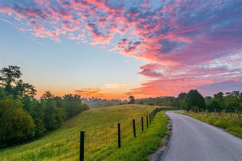
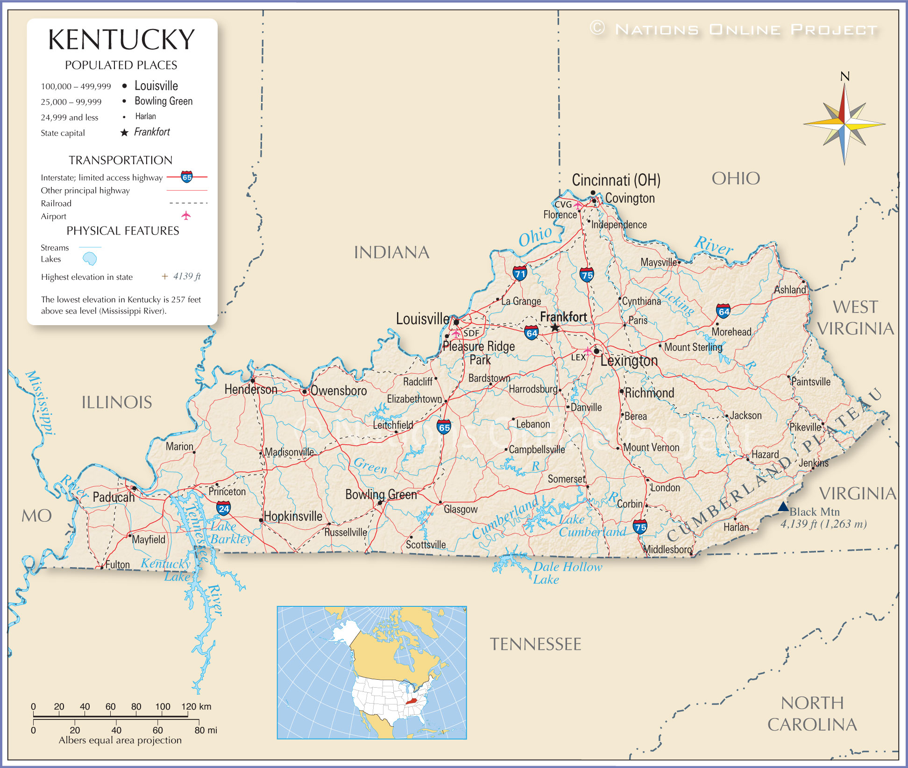

Kentucky: the Bluegrass State


Welcome to Kentucky
Established in 1792, Kentucky is located in the east south-central region. It borders West Virgina, Tennessee, Indiana, Missouri, Illinois, and Ohio. Its diverse scenery ranges from the Appalacian mountains, lush forest, rolling hills, tobacco fields, farms, and expanding rivers.
Kentucky is known for: boubon, moonshine, horse racing, coal mines, tobacco fields, and southern foods.
Attractions in Kentucky
- Churchhill Downs: Home of the Kentucky Derby.
- Hodgensville: Abraham Lincoln's birthplace.
- Cumberland falls: View a rainbow under a moonlit night.
- Versailes Castle: Bed and breakfast, murder mysteries, and more.
- The Kentucky Boubon Trail: Tour 18 distileries.